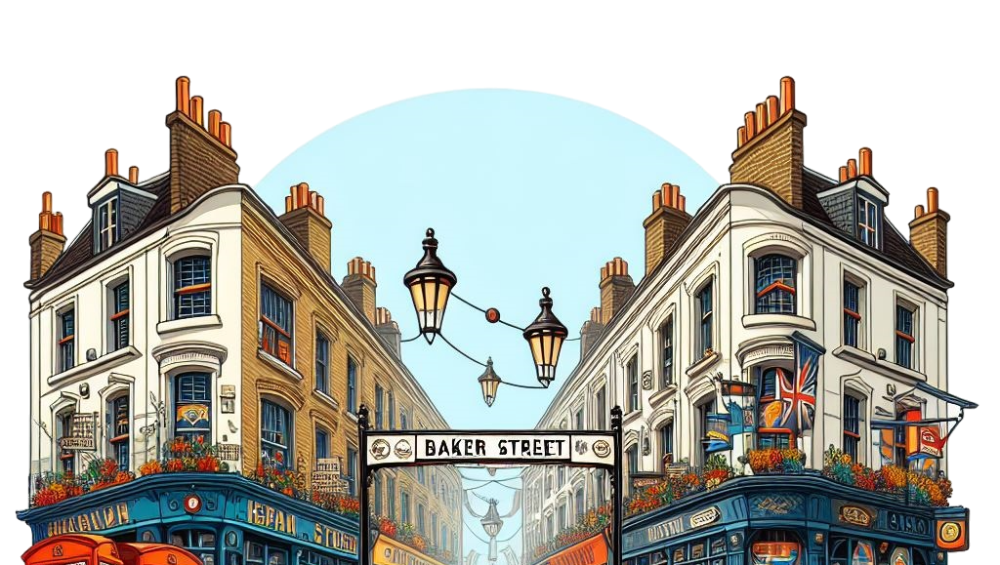

Hello there, glad you are here!
My name is Henrique Mergulhão, I do love tecnology, arts and human science! I've worked as a QA/TESTER for over than 10 years, learning and teaching non stop, and here I intent to show a little bit about what I can do, be my guest to look around!
